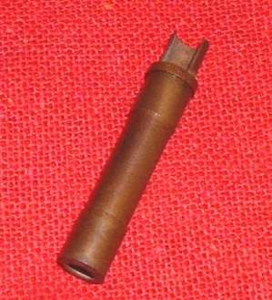
The Needle Jet is located in the center of the Carburetor. The Jet Needle enters into the top of the Needle Jet and the Main Jet screws into the bottom. Poor, little Needle Jet. It sort of gets shafted and screwed at the same time. Needle Jets controls the fuel mixture from 15% to 60% open throttle. There seems to be three basic styles of Needle Jet.
- Mikuni Primary style
- Mikuni Bleed style
- Keihin style
The Mikuni Primary style seems to be the most common. At least most all of the Carburetors I have worked on and have lying around are of this style. Next comes the Keihin style and then the Mikuni Bleed style. I am sure there are lots more styles out there but these seem to be the most common. Another thing they all have in common is that they all use an air bleed. Also, for the most part, they come in different sizes. At least the Mikunis do. I'm not totally sure about the Keihins. I haven't found any numbers on them.
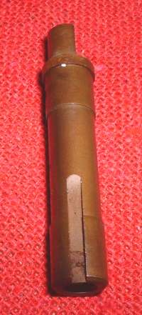 Mikuni Primary Style |
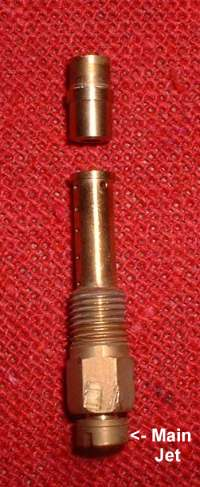 Keihin Style |
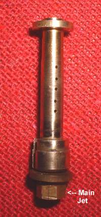 Mikuni Bleed Style |
If you look at the example below you will see the Primary style Needle Jet. that there is a round tube pressed into the top of the Needle Jet. Also notice there is a hole cut into one side of the Needle Jet. This hole is an air bleed from the Air Cleaner side of the Carburetor. It can just be a clear passage to the air in the Carburetor Bell or there can be an Air Jet screwed into that passage.
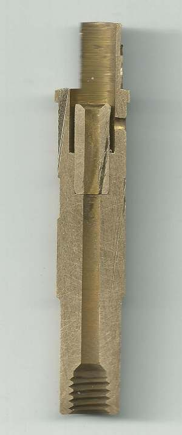 Needle Jet sectioned |
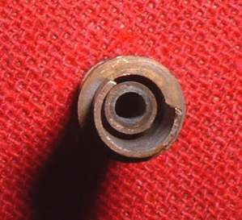 Needle Jet Center Tube |
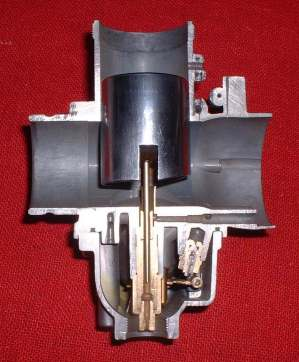 Needle Jet 1 |
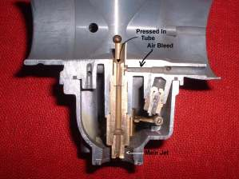 needle Jet 2 |
The Needle jets are installed in the Carburetor in one of two ways. Both the Mikuni Primary and Bleed type Needle Jets are put in through the throat of the Carburetor and are held in the proper position by a pin and locked in position but the Main Jet and a washer of some kind. The Keihin type Needle Jet is held in by screwing the Needle Jet into the Carburetor. The Main Jet then screws into the bottom of the Needle Jet.
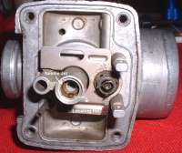 Needle Jet Locating Pin |
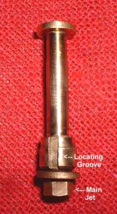 Mikuni Bleed style Locating Pin Groove |
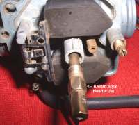 Keihin style Screw-In Needle Jet |
I'm sure there are other different Needle Jet styles but this probably covers 95 % of what is out there.
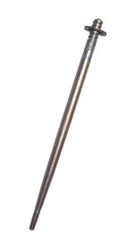
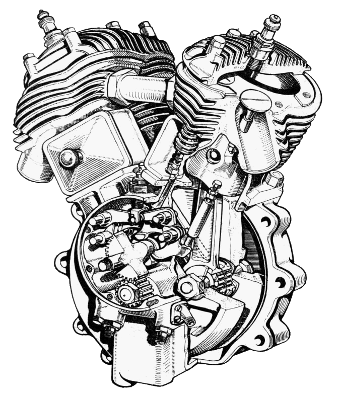 |
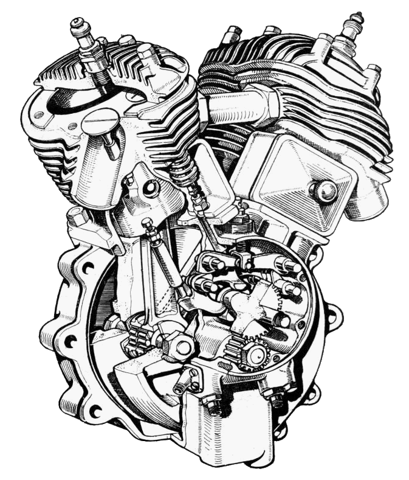 |
Copyright © 1999-2015 dansmc.com. All rights reserved.